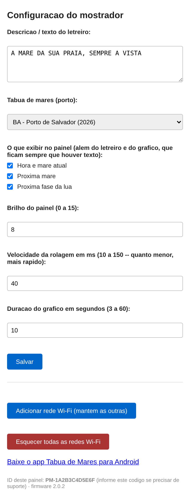
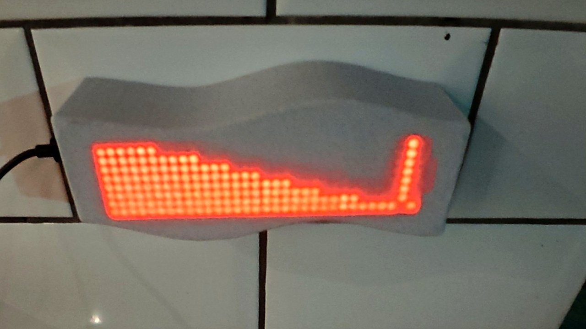

A maré da sua praia, sempre à vista.
Painel de LED que mostra a hora, a maré agora, o gráfico da maré e a fase da lua — direto do seu Wi-Fi, sem aplicativo, com dados oficiais da Marinha do Brasil.
Envio para todo o Brasil · Configuração sem aplicativo, direto pelo navegador do celular
Recursos
Feito pra quem vive perto da maré
Pescadores, marinas, casas de praia, restaurantes e pousadas por onde passam turistas que precisam da informação da maré — e quem simplesmente gosta de saber a hora certa sem abrir o celular.
54 portos, litoral inteiro
Do Amapá ao Rio Grande do Sul, incluindo Fernando de Noronha — dados oficiais da Diretoria de Hidrografia e Navegação (Marinha do Brasil).
Gráfico da maré, pixel a pixel
Além da hora e da maré atual, o painel desenha a curva da maré ao longo do dia, com marcação de "agora".
Fase da lua
Cheia, nova, crescente ou minguante — sempre no ciclo de exibição, sem precisar calcular por fora.
Conecta sozinho
Guarda até 5 redes Wi-Fi conhecidas e tenta cada uma sozinho — útil pra quem leva o aparelho entre casa, sítio e barco.
Atualiza sozinho todo ano
Quando a tábua do ano seguinte fica disponível, o aparelho baixa sozinho — sem precisar levar pra ninguém mexer.
Como funciona
Três passos até a maré aparecer na parede
Ligue na USB-C
Ao ligar pela primeira vez, o aparelho abre sua própria rede de configuração.
Conecte o Wi-Fi e escolha o porto
Pelo navegador do celular, sem instalar nada: escolha a rede Wi-Fi do local e o porto mais próximo numa lista com o litoral inteiro.

Pronto
O painel já mostra hora, maré, gráfico e fase da lua — e continua se atualizando sozinho depois disso.
Já tem o seu? Veja o manual completo de uso.
Quer o painel também no celular? No Android, baixe o app Tábua de Marés (APK) — versão completa, com widget na tela inicial. No iPhone, use o app web: a Apple não permite instalar aplicativos fora da App Store, então essa é a forma de ter o painel na tela de início.
Especificações
Ficha técnica
| Painel | Matriz de LED (MAX7219), módulos 8×8 |
| Processador | ESP32 com Wi-Fi integrado |
| Alimentação | USB-C, 5V |
| Ajustes | Brilho e velocidade de rolagem, pela tela de configuração |
| Texto personalizado | Mensagem própria no letreiro, até 3999 caracteres |
| Blocos de informação | Liga/desliga individualmente: hora e maré atual, próxima maré, fase da lua (o gráfico sempre aparece) |
| Redes Wi-Fi | Até 5 memorizadas, conecta sozinho na mais próxima conhecida |
| Fonte dos dados | Tábuas oficiais da Marinha do Brasil (DHN) — 54 portos, ano 2026 |
Produtos
Preço
Fale no WhatsApp pra combinar o prazo de entrega.
Mostrador de Tábua de Marés
Painel completo com todos os recursos: hora, maré atual, gráfico da maré e fase da lua, com acesso aos 54 portos do litoral brasileiro.
R$ 450 à vista
Tamanho padrão 32×8 (4 módulos) — outros tamanhos sob consulta.
- Firmware já configurado, pronto pra usar
- Atualização automática de tábua todo ano
- Acesso aos 54 portos, sem custo extra
Carregador USB-C
Carregador dedicado para o mostrador — evita instabilidade por fonte fraca ou incompatível.
R$ 55
Opcional, caso já tenha uma fonte USB-C de 5V/2A compatível.
- 5V, compatível com o consumo do painel
- Plugue padrão brasileiro
Fotos
O painel de verdade
Painel instalado e funcionando. As próximas fotos (instalação e acabamento) entram assim que ficarem prontas.

Aviso importante: os dados de maré são previsões astronômicas oficiais da Marinha do Brasil (DHN), não medições em tempo real. Vento, pressão atmosférica e ressacas podem alterar a altura real da água. Não usar como única fonte para navegação ou segurança.